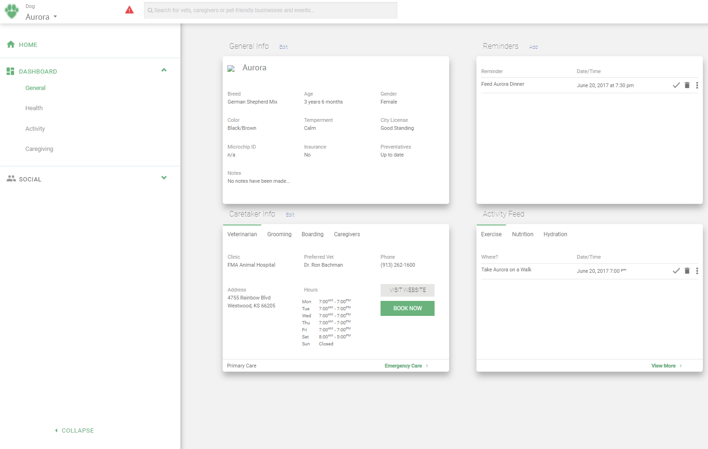
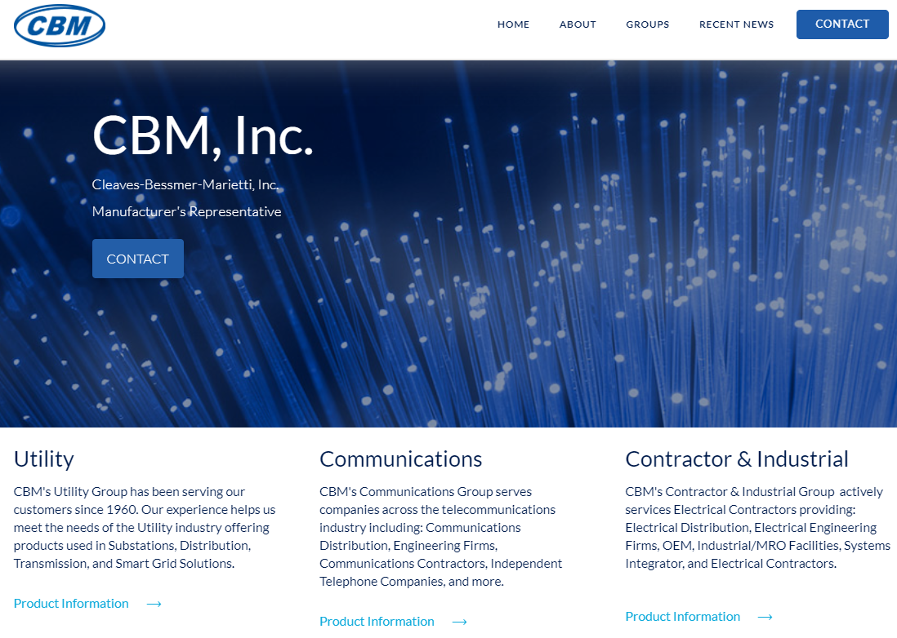
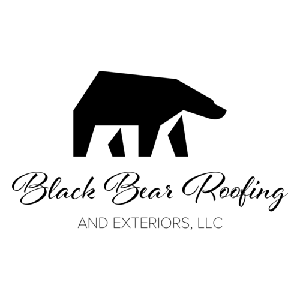

Tim Stone
Front-End Developer Portfolio
Bio
Front-end Web Development wasn't even on my radar when I found it 7 years ago. After landing a work-study position in the marketing department of my university I was fortunate to build a relationship with the department's lead web developer. He quickly took me under his wing and taught me everything he knew. His teaching style, whilst unorthodox, gave me the ability to learn anything and overcome any challenge. Day in and day out he would print off pages of basic websites and tell me to write it out in html. He did nothing to prepare me for each lesson. Every night I stumbled around my text editor trying to solve the progressively more difficult problems he gave me. With each project I finished he would comb through my code and critique every bit. It battle hardened me and made me able to face any challenge, even those that I have no clue how to overcome. In the following years I would progress from a 5-hour per week work study to a nearly full time Associate Web Editor. At that same time I began working as a freelancer and have now finished over 50 projects for companies across many industries and spanning the entire U.S. I'm proud to showcase some of my favorite projects here. Some were gruelling contracts with tight deadlines and others were simple html canvas games I made just to learn something new. I hope you enjoy peeking into the window of my journey and further hope that your organization could be the next step in that journey. Here's to many more lines of code and even more lines of comments!
Showcase

{kind=link}
Pawbits was a start-up for which I was contracted to build the front-end. After some unrelated events the start-up never made it past the development phase. However, it is still one of my personal favorite projects. Originally, the app was built in Angular, but needed to be converted to basic html due to back-end limitations. My personal favorite features are the side nav and the modals.
See Site See CodeOffline Environments
A collection of projects that are either no longer online or were used in offline applications
{kind=link}
{kind=link}
{kind=link}
{kind=link}
Live Environments
A collection of client sites that are currently live

{kind=link}
Cleaves-Bessmer-Marrieti, inc. is a custom Wordpress site built using X-theme as a baseline. In this project I built the complete front-end of the site. Custom page layouts include: the entire products funnel and the blog section.
See Site See Code

{kind=link}
Black Bear Roofing and Exteriors LLC. is another Wordpress site built using X-theme as a baseline. For this project, I built mostly within the bounds of X-Theme.
See Site{kind=link}
The Evangel Brand Guidelines Site was one of the first full sites I developed. I started with a Wordpress theme and worked with plugins/custom CSS to get desired results.
See Site